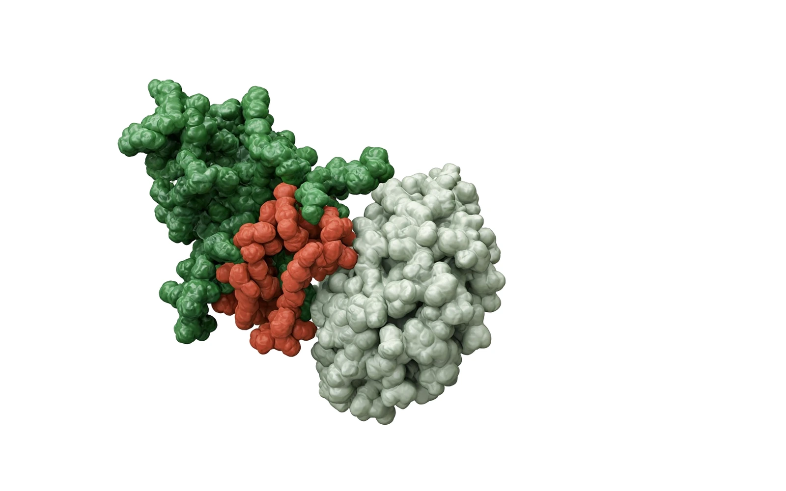
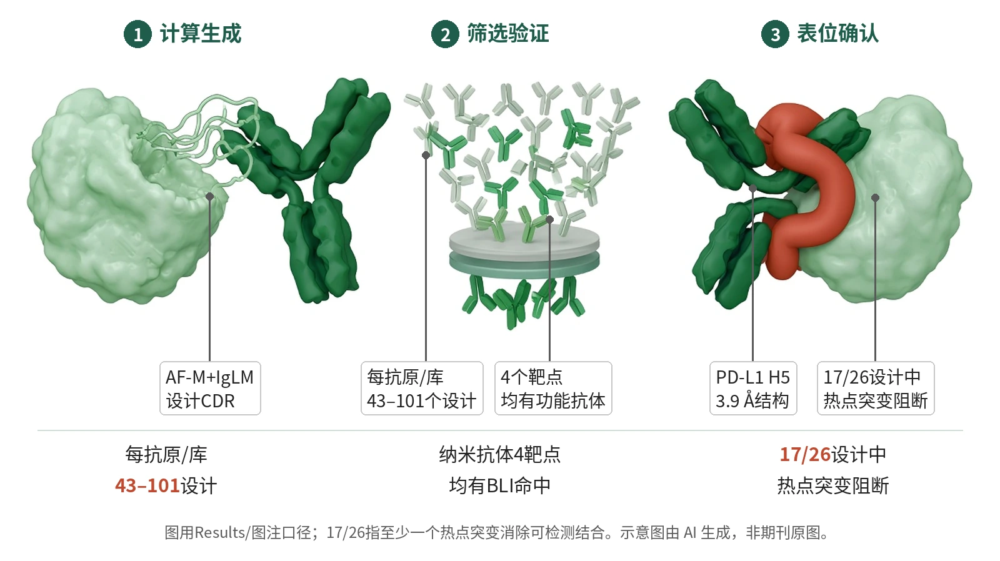

封面示意：抗体片段夹住抗原，赤陶红CDR环嵌入表位。图片由 AI 生成，非原文图片。
在4个蛋白靶点中，Germinal只测试每抗原43–101个设计，生成纳米抗体和scFv/Fab格式的功能性抗体。

- 指定抗原表位和框架
- 生成并过滤CDR序列
- 低通量筛选候选
- BLI确认结合
- 突变验证表位
图示Germinal从AF-M/IgLM共优化到筛选验证，43–101个为摘要/Fig.1D每抗原/每设计库口径；BLI确认结合，一个PD-L1 H5代表性复合物经cryo-EM，热点突变支持多靶点表位。示意图由 AI 生成，依据原文结果绘制，非期刊原图，不代表分子比例
研究背景与待解问题
抗体能高特异性识别蛋白表位，但传统动物免疫和大型库筛选常耗时、昂贵，且很难预先指定抗体落在抗原的哪一块区域。对药物发现和基础研究来说，真正稀缺的不是再做一次筛选，而是把筛选规模压到低n，同时保留表位可控性和可开发性。
Mille-Fragoso等在Nature Biotechnology提出Germinal，把结构预测器AF-M与抗体语言模型IgLM合并为同一生成目标。它不从已有弱binder出发，而是在给定抗体框架上从头设计CDR，再用低通量实验验证候选是否表达、结合并命中指定表位。
研究设计
研究是计算生成加体外验证。Germinal先以预测抗原结构、指定表位和抗体框架为输入，生成、优化并过滤CDR序列。纳米抗体验证队列是101个PD-L1、46个IL3、43个IL20和52个BHRF1排名靠前设计；scFv/Fab只在PD-L1和IL3扩展，各48个设计。
纳米抗体初筛采用NanoBiT。HiBiT（K_D=0.7 nM）定量LgBiT融合binder表达；抗原–SmBiT检测结合，尽管SmBiT的K_D=190 μM。候选再经BLI确认；scFv重格式为Fab后先SPR、再BLI。这不是临床或组间效能研究，核心读出是可测结合和表位验证，成功率均为描述性。
核心结果
低n覆盖四靶点
主要读出显示，Germinal在4个蛋白靶点和所有测试格式均生成功能性抗体，每抗原只测试43–101个设计。纳米抗体从101个PD-L1、46个IL3、43个IL20、52个BHRF1中，经NanoBiT筛出25/101、11/46、11/43、20/52进入BLI。
BLI确认纳米抗体
BLI随后在PD-L1、IL3、IL20、BHRF1分别检出7/25、2/11、4/11、5/20个结合体，并在4个抗原均得到纳摩尔结合体。这些数字是各自进入BLI的候选分母，不是靶点间正式比较；BLI最高测试浓度下>0.07 nm位移才定义为命中。
格式扩展与亲和力
scFv设计中，48个PD-L1和48个IL3以Fab格式SPR初筛，得到4个PD-L1和1个IL3候选；BLI确认3/4个抗PD-L1和1个抗IL3具有可测结合。图3纳米抗体示例为PD-L1 E11 K_D=170 nM、IL3 D2 Ser K_D=280 nM、IL20 H5 K_D=190 nM、BHRF1 A5 K_D=1.2 μM。
表位被实验证实
表位层面，H5-PD-L1复合物的cryo-EM分辨率为3.9 Å，与预测模型全局Cα RMSD为1.25 Å，预测模型在全部6个CDR环上也与cryo-EM密度局部吻合。热点丙氨酸突变覆盖PD-L1、IL3、IL20和BHRF1，相对野生型至少2倍降低亲和力，17/26个设计至少一个热点突变完全消除可检测结合。
多反应性总体低
PSR多特异性实验（流式微粒法）显示，所有Germinal设计的多反应性低于阳性对照的4%，并接近阴性对照。例外是D2 Ser：它恢复单体表达和靶向结合后，相比原始D2显示明显更高多反应性，提示开发性评估不能只看K_D。整体结果链条因此包括生成、初筛、亲和力确认、结构定位和多特异性排查。
机制解读
原文实验证明：Cryo-EM直接连接了计算表位和真实结合：PD-L1 H5在3.9 Å结构中保留目标热点接触，整体Cα偏差1.25 Å；突变矩阵显示17/26个设计被至少一个热点突变完全阻断。
实验还把表达、结合与非特异性拆开验证。NanoBiT先用HiBiT K_D=0.7 nM读出表达，再用SmBiT K_D=190 μM读出抗原邻近；BLI确认7/25、2/11、4/11、5/20的靶点级命中，PSR显示总体<4%阳性对照。
作者推测：作者推测，结构目标与IgLM序列先验的联合优化可减少非抗体样CDR和框架接触；D2 Ser的结果提示，单个半胱氨酸替换虽可能改善单体表达，却可能引入非特异性相互作用。作者也认为scFv过滤规则可能不能直接从纳米抗体泛化，需按格式校准。
局限与不确定
- 外推性首先受抗原结构限制。4个实验靶点的AF3输入结构已对照既有实验结构，Cα RMSD均<1 Å；因此，结果证明Germinal可用高质量预测结构做设计，但不能等同于已验证缺少实验结构抗原的成功率。
- 终点层级也要克制。每抗原43–101个设计足以显示低n验证的可行性，但研究没有为靶点间或格式间成功率设置效能；scFv/Fab只扩展到2个靶点，因此不应把纳米抗体与scFv或靶点差异写成优效比较。
- 工程成本仍高。Methods写明典型采样需200–500个H100-GPU小时，才能得到200–400个通过过滤设计。开发性也不能只看亲和力：D2 Ser恢复单体表达和结合后，多反应性相对原始D2升高。
临床/产业意义
如果研究者已有可信的蛋白抗原结构和明确表位，Germinal给出了一条可复现的路线：先在计算端把候选压到每抗原43–101个，再用表达、结合、结构和突变逐级筛掉假阳性。它的开放代码和实验流程，降低了复现实验的门槛。
对产业转化的意义在于早期发现效率，而不是患者疗效已被证明。若后续能降低H100计算成本、验证更多困难表面，并把多反应性纳入排序，表位定向抗体设计可能从大规模库筛选转向更小、更可解释的设计—验证循环。